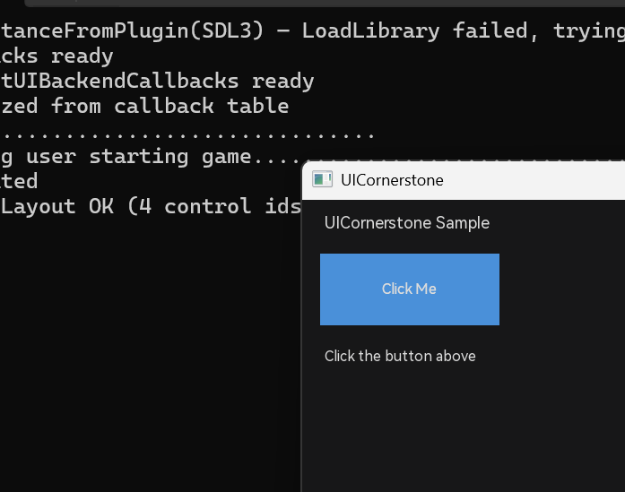

2 快速起步
本节目标：10 分钟内把 UICornerstone 的第一个窗口跑起来。
2.1 获取代码
仓库包含全部后端与依赖子模块，克隆时必须带 --recursive：
git clone --recursive https://github.com/SeaOceanLiu/UICornerstone.git
cd UICornerstone依赖全部以子模块预置（subModules/libs 下为预编译 SDK 库），无需手动安装第三方库。
2.2 环境要求
| 平台 | 要求 |
|---|---|
| Windows | Visual Studio 2022（「使用 C++ 的桌面开发」工作负载）或 VS2022 Build Tools；CMake 3.16+ |
| Linux | GCC 9+ / Clang 10+；CMake 3.16+（GLFW/OpenGL 依赖随后端） |
| 通用 | C++17 编译器；CMake 3.16+（文档与 CI 使用 3.20+） |
2.3 编译
Windows
项目内置构建脚本，按后端选择：
build_scripts\build.bat sdl3 :: SDL3 后端（默认、功能最全）
build_scripts\build.bat sfml :: SFML 后端
build_scripts\build.bat raylib :: Raylib 后端（单 DLL 部署最简）Linux（通用 CMake）
cmake -B build -DUICORNERSTONE_BACKEND=SDL3 -DCMAKE_BUILD_TYPE=Debug
cmake --build build --config Debug三后端的 CMake 开关：-DUICORNERSTONE_BACKEND=SDL3 / =SFML / =RAYLIB。
2.4 运行第一个样例
cmake --build build\sdl3 --config Debug --target hello_uicornerstone
build\sample\hello_uicornerstone\sdl3\Debug\hello_uicornerstone.exe你会看到一个窗口：标题 Hello UICornerstone，内含按钮与状态文本——点击按钮，标签实时更新。这是声明式 UI 的最小范例（JSON 布局 + C ABI 调用），代码在 samples/hello_uicornerstone/。

hello_uicornerstone：声明式 JSON 布局渲染结果（按钮 + 状态标签）
2.5 快速验证其它入口
:: 运行单个测试（auto=<秒> 自动运行 N 秒后退出，exit=0 表示通过）
cd build\sdl3\test\Debug
test_label.exe auto=3
:: C++ Binding 样例（UICORN_AUTO=1 无人值守冒烟：240 帧自动退出）
set UICORN_AUTO=1
build\binding\Debug\sample_cpp_hosted.exe
:: 命令行选后端（缺省 sdl3）
sample_cpp_hosted.exe backend=sfml视觉类测试会弹出真实窗口；在 CI/无头环境下可用
auto= 自动跑完退出。全部测试支持三后端全量回归（exit=0 全过）。2.6 项目结构速览
| 目录 | 内容 |
|---|---|
include/ + src/ | 核心库：控件、事件、焦点、布局、JSON、动画 |
binding/ | C++ Binding（纯动态加载，不链接 DLL import lib） |
samples/ | 4 种集成模式示例（hello / programmatic / fromsource / loadlibrary） |
test/ | 自动化测试（test_*.cpp，三后端通用） |
layouts/ | JSON 布局文件 |
docs/ | 本用户手册 |
design/ | 设计文档 + 用户教程（Tutorial.md 等） |
build_scripts/ | build.bat / build_test.bat |
subModules/ | SDL3、SFML、raylib、json、assets、预编译 libs |